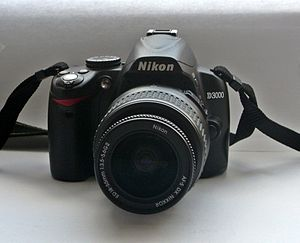

ФотоФан
Nikon D3000

Описание товара
- любительская зеркальная фотокамера
- байонет Nikon F
- без объектива в комплекте
- матрица 10.75 МП (APS-C)
- экран 3"
- вес без элементов питания 485 г
Подробные характеристики товара
- Камера
Тип камеры - зеркальная
- Объектив
Поддержка сменных объективов
Байнет Nikon F
Объектив в комплекте - нет
- Матрица
Общее число пикселов - 10.75 млн.
Число эффективных пикселов - 10.2 млн
Размер
APS-C (23.6 x 15.8 мм)
Кроп-фактор - 1.5
Максимальное разрешение - 3872 х 2592
Тип матрицы - CCD
Чувствительность 100 - 3200 ISO, auto ISO
Функция очистки матрицы - есть
- Функциональные возможности
Баланс белого - автоматический, ручная установка, из списка
Вспышка - встроенная, подавление эффекта красных глаз, башмак, синхроконтакт, i-TTL
- Режимы съемки
Скорость съемки - 3 кадр./сек
Таймер - есть
Время работы таймера - 2, 5, 10, 20 c
Формат кадра (фотосъемка) - 3:2
Видоискатель и ЖК-экран
Видоискатель
зеркальный (TTL)
Поле зрения видоискателя - 95%
ЖК-экран - 230000 точек, 3 дюйма
- Экспозиция
Выдержка X-Sync - 1/100 c
Ручная настройка выдержки и диафрагмы - есть
Автоматическая обработка экспозиции
с приоритетом затвора, с приоритетом диафрагмы
Экспокоррекция +/- 5 EV с шагом 1/3 ступени
Замер экспозиции - 3D цветовой матричный, центровзвешенный, точечный
- Фокусировка
Тип автофокуса - фазовый
Наличие "отвертки" - нет
Подсветка автофокуса - есть
Ручная фокусировка - есть
- Память и интерфейсы
Тип карт памяти - SD, SDHC
Форматы изображения - 3 JPEG, RAW
Интерфейсы - USB 2.0, видео, разъем для пульта ДУ
- Питание
Формат аккумуляторов - свой собственный
Количество аккумуляторов - 1
Разъем питания - есть
Запись видео и звука
Максимальная частота кадров при съемке HD-видео
- Другие функции и особенности
крепление для штатива, дистанционное управление, датчик ориентации